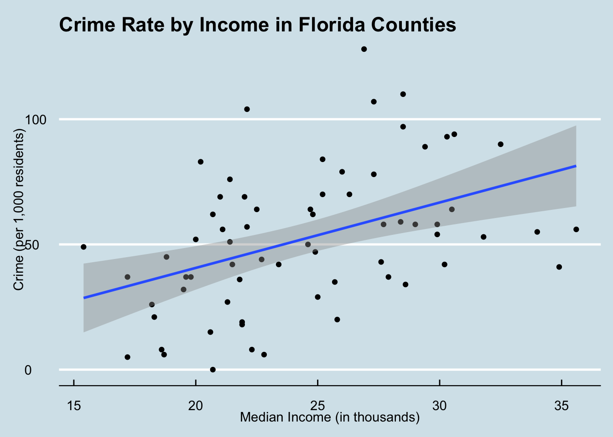
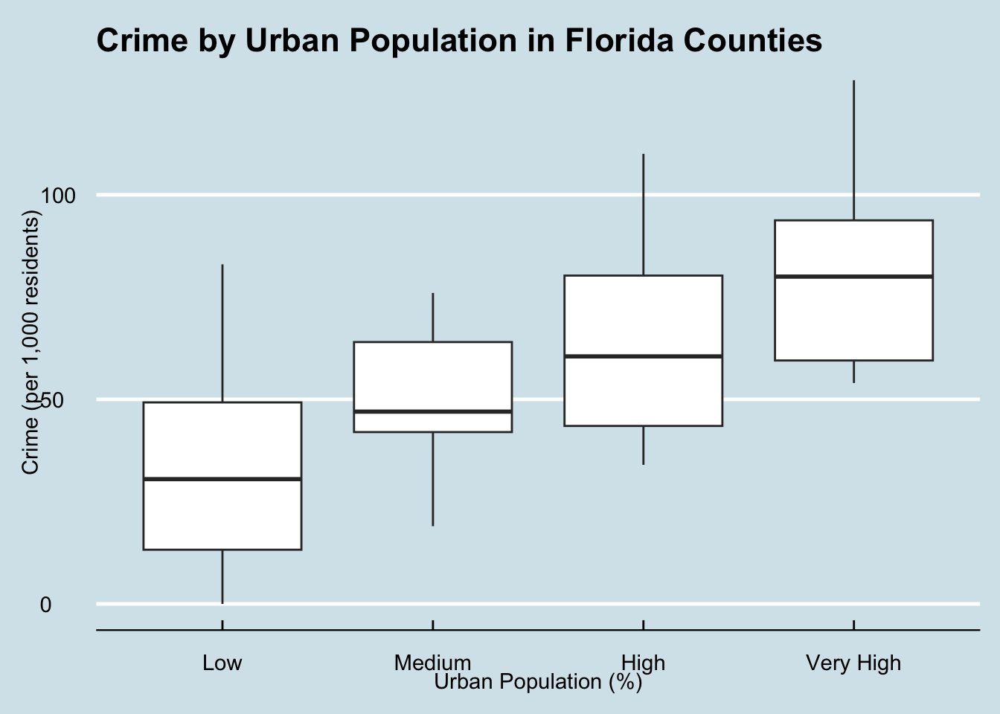
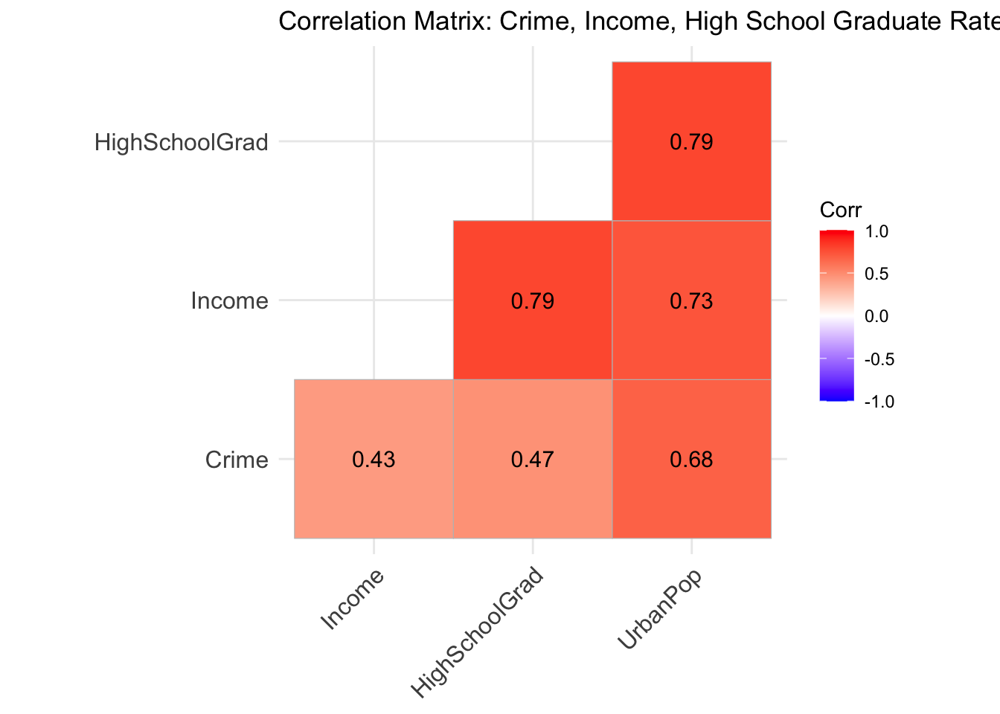
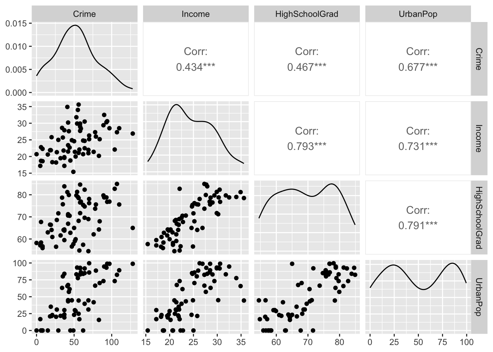

library(readxl)
library(tidyverse)
library(ggplot2)
library(ggthemes)
library(skimr)
library(mosaic)
library(plotly)
library(maps)
library(ggcorrplot)
library(GGally)
library(knitr)
library(ppcor)
library(AICcmodavg)Assignment 5 - Florida Crime Analytics
Introduction
I have been hired by the Florida Police Department (FPD) as their new Data Analyst. I have been tasked with a mission to uncover what socioeconomic factors are most strongly associated with rising crime rates across Florida counties. The FPD is particularly interested in whether income, education, or urbanization play the largest role in explaining differences in crime rates. My analysis will help inform statewide prevention strategies, resource allocation, and community outreach efforts.
Step 1 – Loading and Preparing the Data
florida_crime<- read_xlsx("Florida County Crime Rates.xlsx")
florida_crime<- florida_crime %>%
rename(
"Crime" = "C",
"Income" = "I",
"HighSchoolGrad" = "HS",
"UrbanPop" = "U"
)
florida_crime <- florida_crime %>%
mutate(
County = str_to_title(County)
)skim(florida_crime) %>% kable()| skim_type | skim_variable | n_missing | complete_rate | character.min | character.max | character.empty | character.n_unique | character.whitespace | numeric.mean | numeric.sd | numeric.p0 | numeric.p25 | numeric.p50 | numeric.p75 | numeric.p100 | numeric.hist |
|---|---|---|---|---|---|---|---|---|---|---|---|---|---|---|---|---|
| character | County | 0 | 1 | 3 | 9 | 0 | 67 | 0 | NA | NA | NA | NA | NA | NA | NA | NA |
| numeric | Crime | 0 | 1 | NA | NA | NA | NA | NA | 52.40299 | 28.193627 | 0.0 | 35.50 | 52.0 | 69.00 | 128.0 | ▃▇▇▃▂ |
| numeric | Income | 0 | 1 | NA | NA | NA | NA | NA | 24.51045 | 4.682758 | 15.4 | 21.05 | 24.6 | 28.15 | 35.6 | ▂▇▅▅▂ |
| numeric | HighSchoolGrad | 0 | 1 | NA | NA | NA | NA | NA | 69.48955 | 8.858776 | 54.5 | 62.45 | 69.0 | 76.90 | 84.9 | ▇▇▆▇▆ |
| numeric | UrbanPop | 0 | 1 | NA | NA | NA | NA | NA | 49.55821 | 33.969011 | 0.0 | 21.60 | 44.6 | 83.55 | 99.6 | ▅▆▂▃▇ |
What we did here:
1) loaded the data
2) made the columns ‘C’, ‘I’, “HS’, and ‘U’ readable
3) standardized the ‘County’ rows to have only the first letter capitalized instead of the entire name
4) ran a quick summary on the data
Step 2 – Exploratory Data Analysis
summary(florida_crime) %>% kable()| County | Crime | Income | HighSchoolGrad | UrbanPop | |
|---|---|---|---|---|---|
| Length:67 | Min. : 0.0 | Min. :15.40 | Min. :54.50 | Min. : 0.00 | |
| Class :character | 1st Qu.: 35.5 | 1st Qu.:21.05 | 1st Qu.:62.45 | 1st Qu.:21.60 | |
| Mode :character | Median : 52.0 | Median :24.60 | Median :69.00 | Median :44.60 | |
| NA | Mean : 52.4 | Mean :24.51 | Mean :69.49 | Mean :49.56 | |
| NA | 3rd Qu.: 69.0 | 3rd Qu.:28.15 | 3rd Qu.:76.90 | 3rd Qu.:83.55 | |
| NA | Max. :128.0 | Max. :35.60 | Max. :84.90 | Max. :99.60 |
Plot 1: Crime Rate by Income in Florida Counties
p1<- ggplot(florida_crime, aes(x = Income, y = Crime)) +
geom_point() +
geom_smooth(method = "lm") +
labs(
title = "Crime Rate by Income in Florida Counties",,
x = "Median Income (in thousands)", y = "Crime (per 1,000 residents)") +
theme(legend.position = "none") +
theme_economist() +
scale_colour_economist()p1
Our first plot shows us that crime happens more often in counties with higher median income. This was a bit unexpected!
Plot 2: Crime Rate by Urban Population Percentage in Florida Counties
florida_crime_group <- florida_crime %>%
mutate(
UrbanBin= case_when(
UrbanPop <= 30 ~ "Low",
UrbanPop > 30 & UrbanPop <= 60 ~ "Medium",
UrbanPop > 60 & UrbanPop <= 90 ~ "High",
UrbanPop > 90 ~ "Very High"))
florida_crime_group$UrbanBin<- factor(florida_crime_group$UrbanBin,
levels = c("Low", "Medium", "High", "Very High"))ggplot(florida_crime_group, aes(x = UrbanBin, y = Crime)) +
geom_boxplot() +
labs(
title = "Crime by Urban Population in Florida Counties",
x = "Urban Population (%)", y = "Crime (per 1,000 residents)") +
theme_economist() +
scale_colour_economist()
When urban population percentage is grouped into bins, we can see that more crime occurs in counties with a greater urban population.
Heat Map: Crime in Florida Counties
florida_map<- map_data("county", "florida") %>%
rename(County = subregion)
crime_map<- florida_crime %>%
mutate(County = tolower(County))
crime_map <- left_join(crime_map,florida_map, by="County")
crime_map<- crime_map %>% dplyr::select(1:2,6:8)
p3<- ggplot(data = crime_map, aes(x = long, y = lat, group = group, fill = Crime)) +
geom_polygon(color = "white", linewidth = 0.2) +
coord_fixed(1.3) +
scale_fill_viridis_c(option = "magma", name = "Crimes per 1,000 residents") +
labs(
title = "Florida County Crime Rates",
) +
theme_void()ggplotly(p3)
TipCheck this out!
If you hover over a county on the choropleth map, it shows the number of crimes per 1,000 residents. Try it for yourself!
Step 3 – Correlation Analysis
florida_numeric<- florida_crime %>% dplyr::select(2:5)
florida_cor<- cor(florida_numeric)kable(florida_cor)| Crime | Income | HighSchoolGrad | UrbanPop | |
|---|---|---|---|---|
| Crime | 1.0000000 | 0.4337503 | 0.4669119 | 0.6773678 |
| Income | 0.4337503 | 1.0000000 | 0.7926215 | 0.7306983 |
| HighSchoolGrad | 0.4669119 | 0.7926215 | 1.0000000 | 0.7907190 |
| UrbanPop | 0.6773678 | 0.7306983 | 0.7907190 | 1.0000000 |
Wow, each variable has a substantial relationship with crime! Our correlation matrix shows that of the three variables (Income, HighSchoolGrad, and UrbanPop), Urban Population has the strongest relationship with Crime. Each of the three variables is positively correlated with Crime. Income and HighSchoolGrad have a moderate relationship with Crime, while UrbanPop is strong.
Let’s visualize it:
ggcorrplot(florida_cor, lab = TRUE, type = "lower") +
labs(title = "Correlation Matrix: Crime, Income, High School Graduate Rate & Urban Population Rate")
ggpairs(florida_crime[, c("Crime", "Income", "HighSchoolGrad", "UrbanPop")])
Step 4 – Building Regression Models
Crime ~ Income
m1<- lm(Crime ~ Income, data=florida_crime)
summary(m1)
Call:
lm(formula = Crime ~ Income, data = florida_crime)
Residuals:
Min 1Q Median 3Q Max
-42.452 -21.347 -3.102 17.580 69.357
Coefficients:
Estimate Std. Error t value Pr(>|t|)
(Intercept) -11.6059 16.7863 -0.691 0.491782
Income 2.6115 0.6729 3.881 0.000246 ***
---
Signif. codes: 0 '***' 0.001 '**' 0.01 '*' 0.05 '.' 0.1 ' ' 1
Residual standard error: 25.6 on 65 degrees of freedom
Multiple R-squared: 0.1881, Adjusted R-squared: 0.1756
F-statistic: 15.06 on 1 and 65 DF, p-value: 0.0002456AIC(m1)[1] 628.6045Direction: Positive
Strength: Moderate (R^2=0.18)
Statistically significant (p<0.05)
Income accounts for ~18% of variability in crime. For each $1000 increase in average income, the crime rate rises by 2.6 points. Both the relationship and model are statistically significant.
Crime ~ High School Graduation Rate (%)
m2<- lm(Crime ~ HighSchoolGrad, data=florida_crime)
summary(m2)
Call:
lm(formula = Crime ~ HighSchoolGrad, data = florida_crime)
Residuals:
Min 1Q Median 3Q Max
-43.74 -21.36 -4.82 17.42 82.27
Coefficients:
Estimate Std. Error t value Pr(>|t|)
(Intercept) -50.8569 24.4507 -2.080 0.0415 *
HighSchoolGrad 1.4860 0.3491 4.257 6.81e-05 ***
---
Signif. codes: 0 '***' 0.001 '**' 0.01 '*' 0.05 '.' 0.1 ' ' 1
Residual standard error: 25.12 on 65 degrees of freedom
Multiple R-squared: 0.218, Adjusted R-squared: 0.206
F-statistic: 18.12 on 1 and 65 DF, p-value: 6.806e-05AIC(m2)[1] 626.0932Direction: Positive
Strength: Moderate (R^2=0.21)
Statistically significant (p<0.05)
High school graduation rate accounts for ~21% of variability in crime. For each 1% increase in graduation rate, the crime rate increases by 1.5 points. Both the relationship and model are statistically significant.
Crime ~ Urban Population Rate (%)
m3<- lm(Crime ~ UrbanPop, data=florida_crime)
summary(m3)
Call:
lm(formula = Crime ~ UrbanPop, data = florida_crime)
Residuals:
Min 1Q Median 3Q Max
-34.766 -16.541 -4.741 16.521 49.632
Coefficients:
Estimate Std. Error t value Pr(>|t|)
(Intercept) 24.54125 4.53930 5.406 9.85e-07 ***
UrbanPop 0.56220 0.07573 7.424 3.08e-10 ***
---
Signif. codes: 0 '***' 0.001 '**' 0.01 '*' 0.05 '.' 0.1 ' ' 1
Residual standard error: 20.9 on 65 degrees of freedom
Multiple R-squared: 0.4588, Adjusted R-squared: 0.4505
F-statistic: 55.11 on 1 and 65 DF, p-value: 3.084e-10AIC(m3)[1] 601.43Direction: Positive
Strength: Moderate-Strong (R^2=0.45)
Statistically significant (p<0.05)
Urban population percentage accounts for 45% of variance in crime. For every 1% increase in urban population, the crime rate increases by ~0.6 points. Both the relationship and model are statistically significant.
Crime ~ Income + UrbanPop
m4 <- lm(Crime ~ Income + UrbanPop, data = florida_crime)
summary(m4)
Call:
lm(formula = Crime ~ Income + UrbanPop, data = florida_crime)
Residuals:
Min 1Q Median 3Q Max
-36.130 -15.590 -6.484 16.595 48.921
Coefficients:
Estimate Std. Error t value Pr(>|t|)
(Intercept) 39.9723 16.3536 2.444 0.0173 *
Income -0.7906 0.8049 -0.982 0.3297
UrbanPop 0.6418 0.1110 5.784 2.36e-07 ***
---
Signif. codes: 0 '***' 0.001 '**' 0.01 '*' 0.05 '.' 0.1 ' ' 1
Residual standard error: 20.91 on 64 degrees of freedom
Multiple R-squared: 0.4669, Adjusted R-squared: 0.4502
F-statistic: 28.02 on 2 and 64 DF, p-value: 1.815e-09AIC(m4)[1] 602.4276This model shows us that when accounting for urban population, income seems to not have influence over the crime rate.
Crime ~ Income + HighSchoolGrad
m5 <- lm(Crime ~ Income + HighSchoolGrad, data = florida_crime)
summary(m5)
Call:
lm(formula = Crime ~ Income + HighSchoolGrad, data = florida_crime)
Residuals:
Min 1Q Median 3Q Max
-42.75 -19.61 -4.57 18.52 77.86
Coefficients:
Estimate Std. Error t value Pr(>|t|)
(Intercept) -46.1094 24.9723 -1.846 0.0695 .
Income 1.0311 1.0839 0.951 0.3450
HighSchoolGrad 1.0540 0.5729 1.840 0.0705 .
---
Signif. codes: 0 '***' 0.001 '**' 0.01 '*' 0.05 '.' 0.1 ' ' 1
Residual standard error: 25.14 on 64 degrees of freedom
Multiple R-squared: 0.2289, Adjusted R-squared: 0.2048
F-statistic: 9.5 on 2 and 64 DF, p-value: 0.000244AIC(m5)[1] 627.1524This model shows that income and graduation rate account for ~20% of the variance in crime, which is not much larger than either of the factors alone. This shows that neither income or graduation rate are driving factors in crime rate.
Crime ~ HighSchoolGrad + UrbanPop + Income
m6 <- lm(Crime ~ HighSchoolGrad + UrbanPop + Income, data = florida_crime)
summary(m6)
Call:
lm(formula = Crime ~ HighSchoolGrad + UrbanPop + Income, data = florida_crime)
Residuals:
Min 1Q Median 3Q Max
-35.407 -15.080 -6.588 16.178 50.125
Coefficients:
Estimate Std. Error t value Pr(>|t|)
(Intercept) 59.7147 28.5895 2.089 0.0408 *
HighSchoolGrad -0.4673 0.5544 -0.843 0.4025
UrbanPop 0.6972 0.1291 5.399 1.08e-06 ***
Income -0.3831 0.9405 -0.407 0.6852
---
Signif. codes: 0 '***' 0.001 '**' 0.01 '*' 0.05 '.' 0.1 ' ' 1
Residual standard error: 20.95 on 63 degrees of freedom
Multiple R-squared: 0.4728, Adjusted R-squared: 0.4477
F-statistic: 18.83 on 3 and 63 DF, p-value: 7.823e-09AIC(m6)[1] 603.6764This model includes all three variables, but still only accounts for ~44% of variance in crime. This is almost the same amount that urban population predicts. With the other models showing that income and graduation rate are not that influential, as well as the urban population rate alone accounting for 45% of variance, we can see that urban population is the driving factor behind crime rate.
AIC
AIC(m1,m2,m3,m4,m5,m6) %>% arrange(AIC) %>% kable()| df | AIC | |
|---|---|---|
| m3 | 3 | 601.4300 |
| m4 | 4 | 602.4276 |
| m6 | 5 | 603.6764 |
| m2 | 3 | 626.0932 |
| m5 | 4 | 627.1524 |
| m1 | 3 | 628.6045 |
Urban population is easily the most influential predictor in crime rate! The model ‘m3’ (Crime ~ Uban Population) is the best model as it balances accuracy and simplicity, as the list of AICs reflects.
Step 5 - Communicate Your Findings
Chief,
The model that best predicts crime rates in Florida counties is Crime ~ UrbanPop. Urban population rate is easily the most influential predictor, explaining 45% of variance in crime alone. The PD should be focusing their efforts towards resources like affordable housing programs, rehabilitative programs, decriminalizing drug use, and reducing homelessness. A limitation in my analysis is that there were only three main variables that I had to work with; I am sure there are other demographic information that could further explain the crime rate.
Shannon Joyce